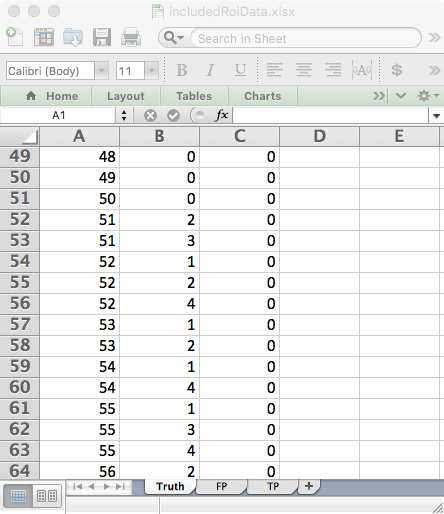

Chapter 25 ROI paradigm
25.1 Introduction
In the region-of-interest (ROI) paradigm (Obuchowski 1997, @obuchowski2010data) each case is regarded as consisting of \({{Q}_{k}}\) (\({{Q}_{k}}\ge 1\)) “quadrants” or “regions-of-interest” or ROIs, where k is the case index (\(k=1,2,...,K\)) and \(K\) is the total number of cases (i.e., case-level non-diseased plus case-level diseased cases). Each ROI needs to be classified, by the investigator, as either ROI-level-non-diseased (i.e., it has no lesions) or ROI-level-diseased (i.e., it has at least one lesion). Note the distinction between case-level and ROI-level truth states. One can have ROI-level non-diseased regions in a case-level diseased case. A case-level diseased case must contain at least one ROI-level diseased region and a case-level non-diseased case cannot have any ROI-level diseased regions.
The observer gives a single rating (in fact an ordered label) to each ROI, denoted \({{R}_{kr}}\) (\(r\) = 1, 2, …, \({{Q}_{k}}\)). Here \(r\) is the ROI index and \(k\) is the case index. The rating can be an integer or quasi- continuous (e.g., 0 – 100), or a floating point value, as long as higher numbers represent greater confidence in presence of one or more lesions in the ROI.
The ROI paradigm is not restricted to 4 or even a constant number of ROIs per case. That is the reason for the k subscript in \({{Q}_{k}}\).
The ROI data structure is a special case of the FROC data structure, the essential difference being that the number of ratings per case is an a-priori known value, equal to \({{Q}_{k}}\).
ROI-level non-diseased region ratings are stored in the
NLfield and ROI-level diseased region ratings are stored in theLLfield.One can think of the ROI paradigm as similar to the FROC paradigm, but with localization accuracy restricted to belonging to a region (one cannot distinguish multiple lesions within a region). Unlike the FROC paradigm, a rating is required for every ROI.
25.2 An example ROI dataset
An example simulated ROI dataset is included as datasetROI.
str(datasetROI)
#> List of 3
#> $ ratings :List of 3
#> ..$ NL : num [1:2, 1:5, 1:90, 1:4] 0.95 0.927 0.556 0.805 1.421 ...
#> ..$ LL : num [1:2, 1:5, 1:40, 1:4] 1.57 2.31 2.3 2.34 2.34 ...
#> ..$ LL_IL: logi NA
#> $ lesions :List of 3
#> ..$ perCase: int [1:40] 2 3 2 2 3 3 1 2 3 3 ...
#> ..$ IDs : num [1:40, 1:4] 2 1 1 1 1 2 4 1 1 1 ...
#> ..$ weights: num [1:40, 1:4] 0.5 0.333 0.5 0.5 0.333 ...
#> $ descriptions:List of 7
#> ..$ fileName : chr "datasetROI"
#> ..$ type : chr "ROI"
#> ..$ name : chr "SIM-ROI"
#> ..$ truthTableStr: logi NA
#> ..$ design : chr "FCTRL"
#> ..$ modalityID : Named chr [1:2] "1" "2"
#> .. ..- attr(*, "names")= chr [1:2] "1" "2"
#> ..$ readerID : Named chr [1:5] "1" "2" "3" "4" ...
#> .. ..- attr(*, "names")= chr [1:5] "1" "2" "3" "4" ...
datasetROI$ratings$NL[1,1,1,]
#> [1] 0.9498680 -0.0582497 -0.7763780 0.0120730
mean(datasetROI$ratings$NL[,,1:50,])
#> [1] 0.1014348
datasetROI$ratings$NL[1,1,51,]
#> [1] 1.01867 0.34710 -Inf -Inf
datasetROI$lesions$perCase[1]
#> [1] 2
datasetROI$ratings$LL[1,1,1,]
#> [1] 1.56928 2.05945 -Inf -Inf
x <- datasetROI$ratings$LL;mean(x[is.finite(x)])
#> [1] 1.815513Examination of the output reveals that:
This is a 2-treatment 5-reader dataset, with 50 non-diseased cases and 40 diseased cases, and \({{Q}_{k}}=4\) for all k.
For treatment 1, reader 1, case 1 (the 1st non-diseased case) the 4 ratings are 0.949868, -0.0582497, -0.776378, 0.012073. The mean of all ratings on non-diseased cases is 0.1014348.
For treatment 1, reader 1, case 51 (the 1st diseased case) the NL ratings are 1.01867, 0.3471. There are only two finite values because this case has two ROI-level-diseased regions, and 2 plus 2 makes for the assumed 4-regions per case. The corresponding
$lesionVectorfield is 2.
The ratings of the 2 ROI-level-diseased ROIs on this case are 1.56928, 2.05945. The mean rating over all ROI-level-diseased ROIs is 1.8155127.
25.3 The ROI Excel data file
An Excel file in JAFROC format containing simulated ROI data corresponding to datasetROI, is included with the distribution. The first command (below) finds the location of the file and the second command reads it and saves it to a dataset object ds. !!!DPC!!!
fileName <- system.file("extdata", "RoiData.xlsx", package = "RJafroc", mustWork = TRUE)
ds <- DfReadDataFile(fileName)
ds$descriptions$type
#> [1] "ROI"The DfReadDataFile function automatically recognizes that this is an ROI dataset. Its structure is similar to the JAFROC format Excel file, with some important differences, noted below. It contains three worksheets:

- The
Truthworksheet - this indicates which cases are diseased and which are non-diseased and the number of ROI-level-diseased region on each case.- There are 50 non-diseased cases (labeled 1-50) under column
CaseIDand 40 diseased cases (labeled 51-90).
- The
LesionIDfield for each non-diseased case (e.g.,CaseID= 1) is zero and there is one row per case. For diseased cases, this field has a variable number of entries, ranging from 1 to 4. As an example, there are two rows forCaseID= 51 in the Excel file: one withLesionID= and one withLesionID= .
- The
Weightsfield is always zero (this field is not used in ROI analysis).
- There are 50 non-diseased cases (labeled 1-50) under column

- The
FP(orNL) worksheet - this lists the ratings of ROI-level-non-diseased regions.- For
ReaderID= 1,ModalityID= 1 andCaseID= 1 there are 4 rows, corresponding to the 4 ROI-level-non-diseased regions in this case. The corresponding ratings are 0.949868, -0.0582497, -0.776378, 0.012073. The pattern repeats for other treatments and readers, but the rating are, of course, different.
- Each
CaseIDis represented in theFPworksheet (a rare exception could occur if a case-level diseased case has 4 diseased regions).
- For

- The
TP(orLL) worksheet - this lists the ratings of ROI-level-diseased regions.- Because non-diseased cases generate TPs, one does not find any entry with
CaseID= 1-50 in theTPworksheet.
- The lowest
CaseIDin theTPworksheet is 51, which corresponds to the first diseased case.
- There are two entries for this case, corresponding to the two ROI-level-diseased regions present in this case. Recall that corresponding to this
CaseIDin theTruthworksheet there were two entries withLesionID= 2 and 3. These must match theLesionID’s listed for this case in theTPworksheet. Complementing these two entries, in theFPworksheet forCaseID= 51, there are 2 entries corresponding to the two ROI-level-non-diseased regions in this case.
- One should be satisfied that for each diseased case the sum of the number of entries in the
TPandFPworksheets is always 4.
- Because non-diseased cases generate TPs, one does not find any entry with
25.5 References
Bunch, Philip C, John F Hamilton, Gary K Sanderson, and Arthur H Simmons. 1977. “A Free Response Approach to the Measurement and Characterization of Radiographic Observer Performance.” In Application of Optical Instrumentation in Medicine Vi, 127:124–35. International Society for Optics; Photonics.
Chakraborty, Dev P. 2017. Observer Performance Methods for Diagnostic Imaging: Foundations, Modeling, and Applications with R-Based Examples. Boca Raton, FL: CRC Press.
Chakraborty, Dev P. 2002. “Statistical Power in Observer Performance Studies: A Comparison of the ROC and Free-Response Methods in Tasks Involving Localization.” Journal Article. Acad. Radiol. 9 (2): 147–56. https://doi.org/10.1016/s1076-6332(03)80164-2.
Chakraborty, Dev Prasad. 2010. “Prediction Accuracy of a Sample-Size Estimation Method for ROC Studies.” Journal Article. Academic Radiology 17: 628–38. https://doi.org/10.1016/j.acra.2010.01.007.
Chakraborty, D. P., E. S. Breatnach, M. V. Yester, B. Soto, G. T. Barnes, and R. G. Fraser. 1986. “Digital and Conventional Chest Imaging: A Modified ROC Study of Observer Performance Using Simulated Nodules.” Journal Article. Radiology 158: 35–39. https://doi.org/10.1148/radiology.158.1.3940394.
Clarkson, Eric, Matthew A. Kupinski, and Harrison H. Barrett. 2006. “A Probabilistic Model for the MRMC Method, Part 1: Theoretical Development.” Journal Article. Academic Radiology 13 (11): 1410–21. https://doi.org/10.1016/j.acra.2006.07.016.
Cohen, Jacob. 1988. Statistical Power Analysis for the Behavioral Sciences. 2nd ed. Lawrence Erlbaum Associates.
DeLong, E. R., D. M. DeLong, and D. L. Clarke-Pearson. 1988. “Comparing the Areas Under Two or More Correlated Receiver Operating Characteristic Curves: A Nonparametric Approach.” Journal Article. Biometrics 44: 837–45. https://doi.org/10.2307/2531595.
Dorfman, D. D., K. S. Berbaum, and C. E. Metz. 1992. “ROC Characteristic Rating Analysis: Generalization to the Population of Readers and Patients with the Jackknife Method.” Journal Article. Invest. Radiol. 27 (9): 723–31. https://pubmed.ncbi.nlm.nih.gov/1399456.
Dorfman, Donald D., Kevin S. Berbaum, and Russell V. Lenth. 1995. “Multireader, Multicase Receiver Operating Characteristic Methodology: A Bootstrap Analysis.” Journal Article. Academic Radiology 2 (7): 626–33. https://doi.org/10.1016/S1076-6332(05)80129-1.
Gallas, Brandon D. 2006. “One-Shot Estimate of MRMC Variance: AUC.” Journal Article. Academic Radiology 13 (3): 353–62. https://doi.org/10.1016/j.acra.2005.11.030.
Gallas, Brandon D., Gene a Pennello, and Kyle J. Myers. 2007. “Multireader Multicase Variance Analysis for Binary Data.” Journal Article. Journal of the Optical Society of America. A, Optics, Image Science, and Vision 24 (12): 70–80. https://doi.org/10.1364/josaa.24.000b70.
Hajian-Tilaki, K. O., James A. Hanley, L. Joseph, and J. P. Collet. 1997. “Extension of Receiver Operating Characteristic Analysis to Data Concerning Multiple Signal Detection Tasks.” Journal Article. Acad Radiol 4: 222–29. https://doi.org/10.1016/S1076-6332(05)80295-8.
Hillis, S. L., N. A. Obuchowski, K. M. Schartz, and K. S. Berbaum. 2005. “A Comparison of the Dorfman-Berbaum-Metz and Obuchowski-Rockette Methods for Receiver Operating Characteristic (ROC) Data.” Journal Article. Statistics in Medicine 24 (10): 1579–1607. https://doi.org/10.1002/sim.2024.
Hillis, Stephen L. 2007. “A Comparison of Denominator Degrees of Freedom Methods for Multiple Observer (ROC) Studies.” Journal Article. Statistics in Medicine 26: 596–619. https://doi.org/10.1002/sim.2532.
Hillis, Stephen L. 2014. “A Marginal‐mean ANOVA Approach for Analyzing Multireader Multicase Radiological Imaging Data.” Journal Article. Statistics in Medicine 33 (2): 330–60. https://doi.org/10.1002/sim.5926.
Hillis, Stephen L., and K. S. Berbaum. 2004. “Power Estimation for the Dorfman-Berbaum-Metz Method.” Journal Article. Acad. Radiol. 11 (11): 1260–73. https://doi.org/10.1016/j.acra.2004.08.009.
Hillis, Stephen L., K. S. Berbaum, and C. E. Metz. 2008. “Recent Developments in the Dorfman-Berbaum-Metz Procedure for Multireader (ROC) Study Analysis.” Journal Article. Acad Radiol 15 (5): 647–61. https://doi.org/10.1016/j.acra.2007.12.015.
Hillis, Stephen L., Nancy A. Obuchowski, and Kevin S. Berbaum. 2011. “Power Estimation for Multireader ROC Methods: An Updated and Unified Approach.” Journal Article. Academic Radiology 18 (2): 129–42. https://doi.org/10.1016/j.acra.2010.09.007.
ICRU. 1996. “Medical Imaging: The Assessment of Image Quality.” Journal Article. JOURNAL OF THE ICRU 54 (1): 37–40.
Ishwaran, Hemant, and Constantine A. Gatsonis. 2000. “A General Class of Hierarchical Ordinal Regression Models with Applications to Correlated ROC Analysis.” Journal Article. The Canadian Journal of Statistics 28 (4): 731–50. https://doi.org/10.2307/3315913.
Kupinski, Matthew A., Eric Clarkson, and Harrison H. Barrett. 2006. “A Probabilistic Model for the MRMC Method, Part 2: Validation and Applications.” Journal Article. Academic Radiology 13 (11): 1422–30. https://doi.org/10.1016/j.acra.2006.07.015.
Larsen, Richard J., and Morris L. Marx. 2001. An Introduction to Mathematical Statistics and Its Applications. Book. 3rd ed. Upper Saddle River, NJ: Prentice-Hall Inc.
Metz, C. E. 1978. “Basic Principles of ROC Analysis.” Journal Article. Seminars in Nuclear Medicine 8 (4): 283–98. https://doi.org/10.1016/s0001-2998(78)80014-2.
Niklason, L. T., N. M. Hickey, Dev P. Chakraborty, E. A. Sabbagh, M. V. Yester, R. G. Fraser, and G. T. Barnes. 1986. “Simulated Pulmonary Nodules: Detection with Dual-Energy Digital Versus Conventional Radiography.” Journal Article. Radiology 160: 589–93. https://doi.org/10.1148/radiology.160.3.3526398.
Obuchowski, Nancy A. 1997. “Nonparametric Analysis of Clustered ROC Curve Data.” Journal Article. Biometrics 53: 567–78.
———. 1998. “Sample Size Calculations in Studies of Test Accuracy.” Journal Article. Statistical Methods in Medical Research 7 (4): 371–92. https://doi.org/10.1177/096228029800700405.
———. 2000. “Sample Size Tables for Receiver Operating Characteristic Studies.” Journal Article. Am. J. Roentgenol. 175 (3): 603–8. http://www.ajronline.org/cgi/content/abstract/175/3/603.
Obuchowski, Nancy A., Michael L. Lieber, and Kimerly A. Powell. 2000. “Data Analysis for Detection and Localization of Multiple Abnormalities with Application to Mammography.” Journal Article. Acad. Radiol. 7 (7): 516–25.
Obuchowski, N. A., and H. E. Rockette. 1995. “Hypothesis Testing of the Diagnostic Accuracy for Multiple Diagnostic Tests: An ANOVA Approach with Dependent Observations.” Journal Article. Communications in Statistics: Simulation and Computation 24: 285–308. https://doi.org/10.1080/03610919508813243.
Roe, C. A., and C. E. Metz. 1997a. “Dorfman-Berbaum-Metz Method for Statistical Analysis of Multireader, Multimodality Receiver Operating Characteristic Data: Validation with Computer Simulation.” Journal Article. Acad Radiol 4: 298–303. https://doi.org/10.1016/S1076-6332(97)80032-3.
———. 1997b. “Variance-Component Modeling in the Analysis of Receiver Operating Characteristic Index Estimates.” Journal Article. Acad. Radiol. 4 (8): 587–600. https://doi.org/10.1016/S1076-6332(97)80210-3.
Satterthwaite, F. E. 1941. “Synthesis of Variance.” Journal Article. Psychometrika 6 (5): 309–16.
———. 1946. “An Approximate Distribution of Estimates of Variance Components.” Journal Article. Biometrics Bulletin 2 (6): 110–14.
Starr, SJ, CE Metz, LB Lusted, PF Sharp, and KB Herath. 1977. “Comments on the Generalization of Receiver Operating Characteristic Analysis to Detection and Localization Tasks.” Physics in Medicine & Biology 22 (2): 376.
Starr, Stuart J, Charles E Metz, Lee B Lusted, and David J Goodenough. 1975. “Visual Detection and Localization of Radiographic Images.” Radiology 116 (3): 533–38.
Swensson, Richard G. 1996. “Unified Measurement of Observer Performance in Detecting and Localizing Target Objects on Images.” Medical Physics 23 (10): 1709–25.
Swets, John A., and Ronald M. Pickett. 1982. Evaluation of Diagnostic Systems: Methods from Signal Detection Theory. Book. First. Series in Cognition and Perception. New York: Academic Press.
Toledano, A. Y. 2003. “Three Methods for Analyzing Correlated ROC Curves: A Comparison in Real Data Sets.” Journal Article. Statistics in Medicine 22 (18): 2919–33. https://doi.org/10.1002/sim.1518.
Toledano, A. Y., and C. Gatsonis. 1996. “Ordinal Regression Methodology for ROC Curves Derived from Correlated Data.” Journal Article. Stat Med 15 (16): 1807–26. https://doi.org/10.1002/(SICI)1097-0258(19960830)15:16<1807::AID-SIM333>3.0.CO;2-U.
Van Dyke, C. W., R. D. White, N. A. Obuchowski, M. A. Geisinger, R. J. Lorig, and M. A. Meziane. 1993. “Cine MRI in the Diagnosis of Thoracic Aortic Dissection.” Journal Article. 79th RSNA Meetings.
Zanca, Federica, Jurgen Jacobs, Chantal Van Ongeval, Filip Claus, Valerie Celis, Catherine Geniets, Veerle Provost, Herman Pauwels, Guy Marchal, and Hilde Bosmans. 2009. “Evaluation of Clinical Image Processing Algorithms Used in Digital Mammography.” Journal Article. Medical Physics 36 (3): 765–75. https://doi.org/10.1118/1.3077121.
Zhou, Xiao-Hua, Donna K McClish, and Nancy A Obuchowski. 2009. Statistical Methods in Diagnostic Medicine. Vol. 569. John Wiley & Sons. https://doi.org/110.1002/9780470906514.
References
Obuchowski, Nancy A. 1997. “Nonparametric Analysis of Clustered ROC Curve Data.” Journal Article. Biometrics 53: 567–78.